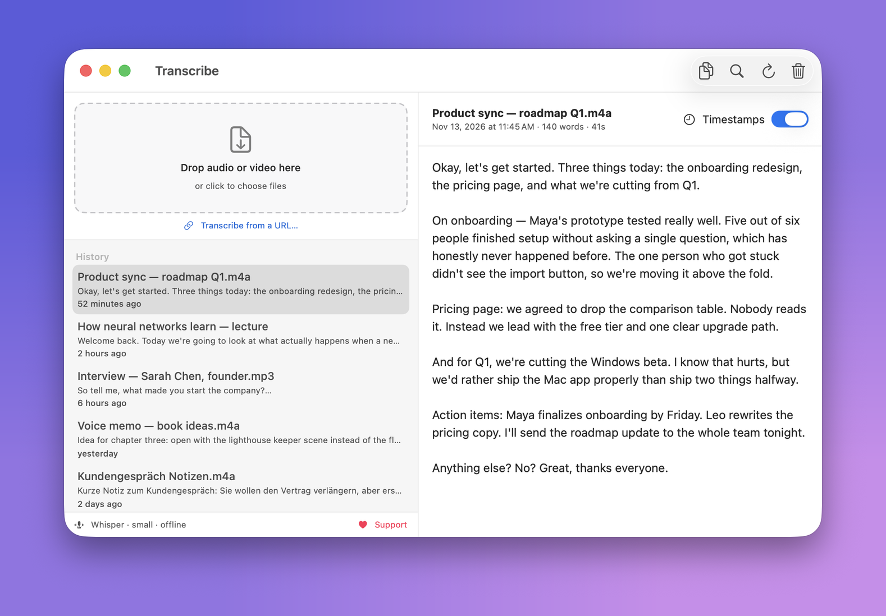
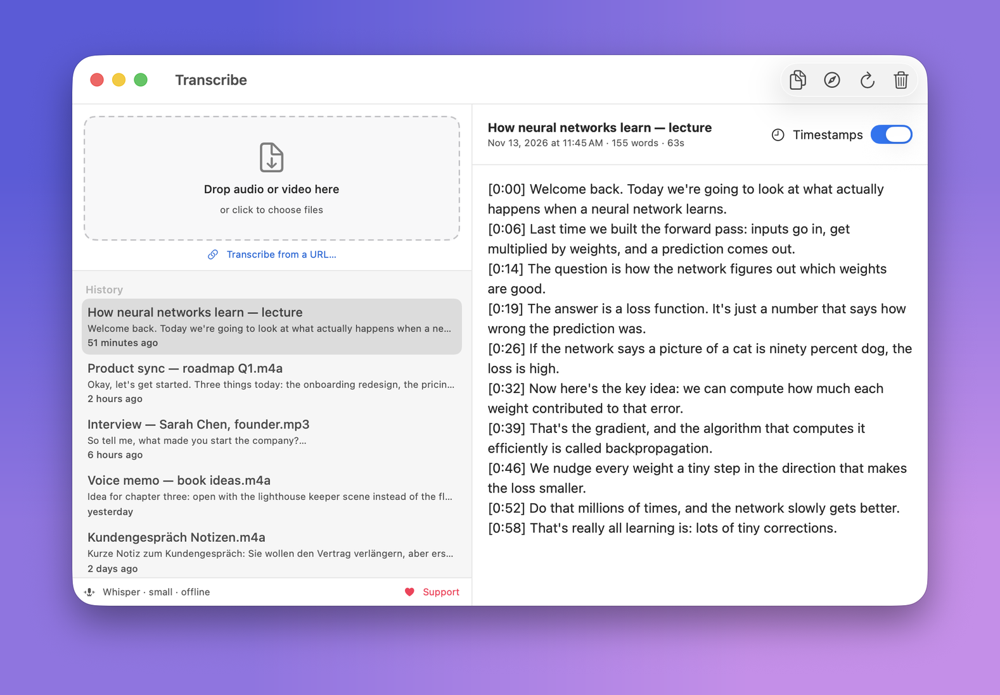

Private by design
Your audio never leaves the Mac. No cloud, no upload, no account. Everything runs locally.
Neural Engine fast
A minute of audio in a few seconds, using the Apple Neural Engine and GPU through Whisper.
Drag, drop, done
Drop any audio or video file (m4a, mp3, wav, ogg, voice memos, mp4) and get clean text, a copy button, and a searchable history.
Yours to keep
No subscription, no trial. Install it once and it keeps working, on your machine.
Timestamped transcripts from a link
Paste a YouTube (or other video) URL and get a transcript with timestamps on every line. Handy for lectures, talks and interviews. The audio is fetched, then transcribed locally like everything else.

How to install
Copy the command above and paste it into Terminal.
Press Return. It installs the latest version into your Applications folder and opens it. The app lets you know when an update is out.
First launch downloads the speech model once, about 650 MB, then it is fully offline.
What does the command actually do?
# Downloads the latest release from GitHub, installs it, and clears # the download quarantine so the bundled engine can run. Nothing hidden. curl https://github.com/J3012B/Transcribe_Mac/releases/latest/download/Transcribe.dmg hdiutil attach Transcribe.dmg cp -R Transcribe.app /Applications/ xattr -dr com.apple.quarantine /Applications/Transcribe.app open /Applications/Transcribe.app
Why Terminal, not a double-click?
This build is not yet notarized by Apple, so a normal download would be blocked by Gatekeeper. Installing through the command above avoids that, and it is fully transparent: you can read every line of the script before running it. A signed, double-click version is on the way.
A free alternative to MacWhisper and Superwhisper
Transcribe runs the same Whisper speech model as the popular paid Mac apps, but it is free and open source, with no subscription and no trial. Everything stays on your machine. Drop in an interview, a voice memo, a podcast, or a video and get accurate text back in seconds. It is a simple, private, local Whisper app for macOS. See the full source on GitHub.
Support Transcribe
Transcribe is free and open source, with no ads, accounts or tracking, and it will stay that way. If it saves you time, a small contribution helps keep it maintained.
♥ Donate